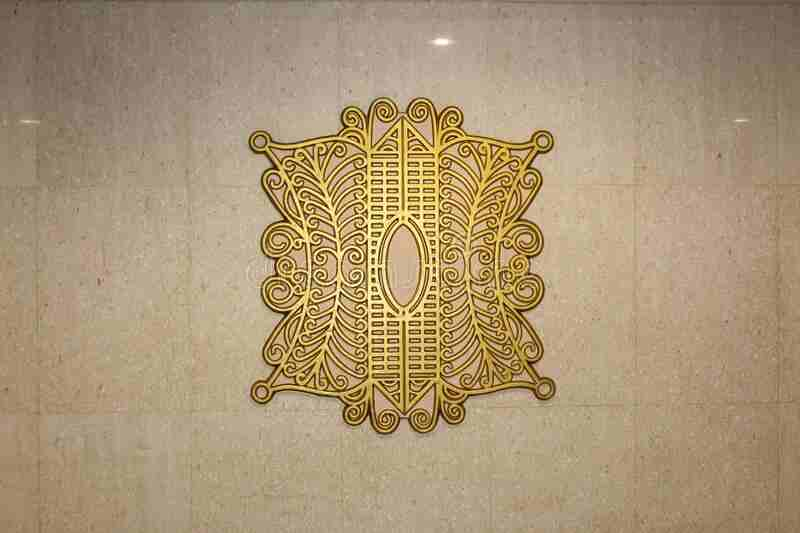

Peralatan fitness berkualitas premium dengan harga terjangkau. Mulai perjalanan fitness sehat Anda hari ini.

Gratis Pengiriman
Garansi 3 Tahun
Konsultasi Gratis
Pelanggan Puas
Produk Tersedia
Kota Terjangkau
Rating Toko